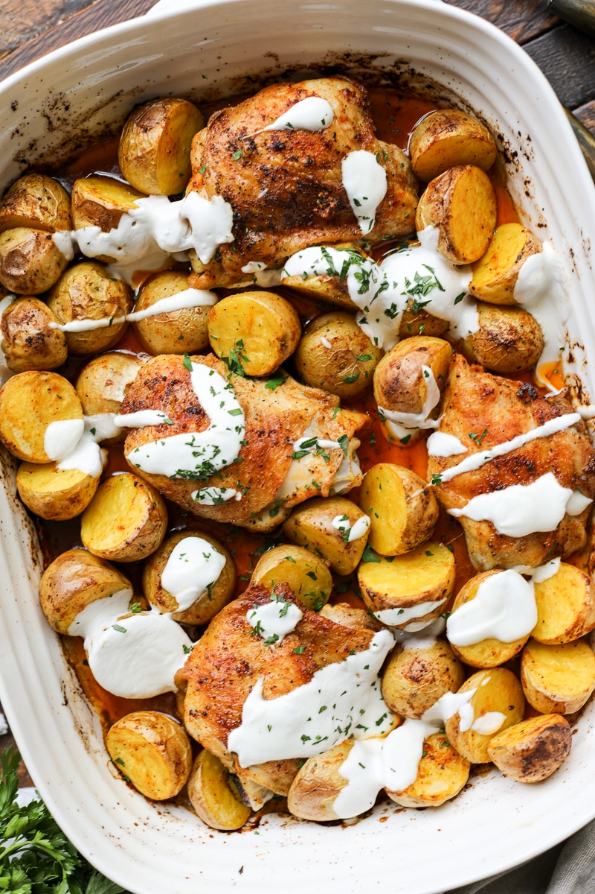

One Pan Roasted Chicken and Potatoes

Image and recipe from healthyishfoods.com
Description
OThis One Pan Roasted Chicken and Potatoes recipe is the perfect weeknight meal. Simply toss the chicken thighs and potatoes with oil, lemon juice and my homemade spice blend for a deliciously simple dinner.
Ingredients
- Chicken
- Potatoes
- Avocado Oil or Olive Oil
- Lemon
- Spice Blend - Combine kosher salt, smoked paprika, garlic powder, dry ground mustard, black pepper, and cayenne pepper
Steps
- Preheat the oven to 400 degrees Fahrenheit. Pat the chicken and potatoes dry with a clean kitchen towel or paper towels. This promotes extra crispy skin. Add the chicken and potatoes to a rimmed oven-safe baking dish that can hold everything.
- Combine the avocado oil, fresh squeezed lemon juice, kosher salt, smoked paprika, garlic powder, dry ground mustard, black pepper and cayenne pepper. Mix well. Drizzle this sauce over the chicken and potatoes. Use your hands to make sure everything is well coated.
- Bake uncovered for 55-65 minutes or until the chicken juices run clear and the potatoes are fully cooked through. Broil for 2-3 minutes for extra crispy skin! The chicken should reach an internal temperature if 165 degrees Fahrenheit to ensure doneness. Cooking time will slightly vary based on the size of the chicken thighs.
- Add whole milk Greek yogurt to a bowl. Add the extra virgin olive oil, fresh squeezed lemon juice, grated garlic, kosher salt and water. Option to add more water until the sauce reaches your desired thickness.
- Once the chicken has rested for 5-10 minutes drizzle everything with the yogurt sauce. Serve and enjoy.
Home